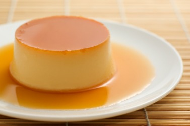

Flan studied at the California Institute of Technology, where he proved himself a brilliant chemist with a specialty in X-ray crystallography. In 1985, Walt's groundbreaking research regarding photon radiography contributed to a project that was awarded the Nobel Prize in Chemistry, awarded jointly to Herbert A. Hauptman and Jerome Karle for outstanding achievements in the development of direct methods for the determination of crystal structures. Following his education, Walter went on to co-found Gray Matter Technologies with his friend, Elliott Schwartz. He now lives in Albuquerque with his family and owns A1A Car Wash.
You've Tried the Rest – Now Try the Best™. And don't forget to Have an A1 Day™!
J.P. Wynne High School is a public high school located in Albuquerque, New Mexico. Walter was well-liked by his many students.